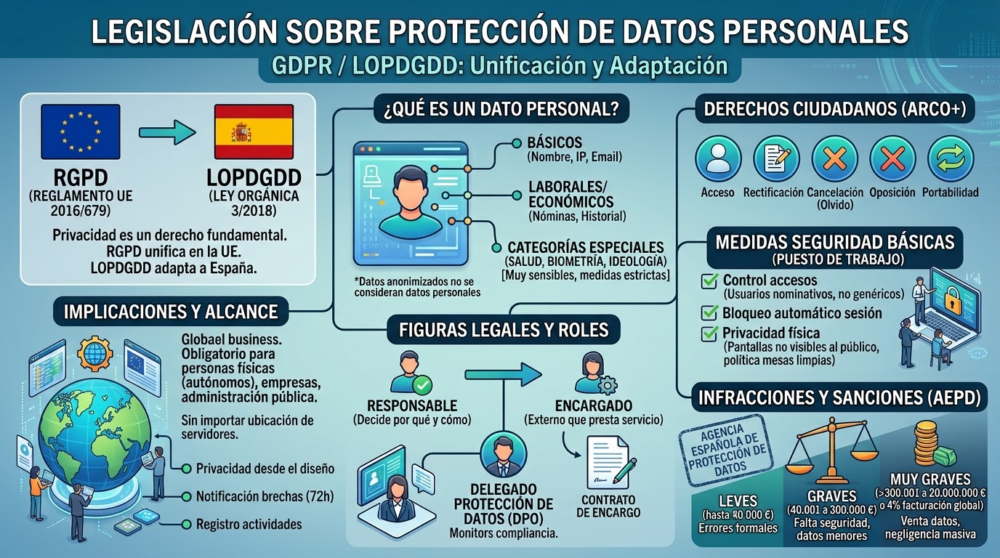
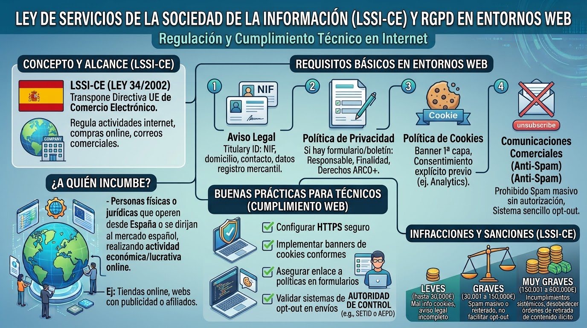

4. Cumplimiento Legal¶
El cumplimiento legal en ciberseguridad asegura que las organizaciones no solo protejan la información de sus usuarios, sino que también eviten sanciones legales.
Para un profesional de las tecnologías de la información (TI), el conocimiento de la legislación vigente resulta fundamental. En el desempeño de sus labores diarias, este perfil accede a servidores, bases de datos y dispositivos de usuarios que albergan información sensible. Por consiguiente, una gestión inadecuada de estos datos puede acarrear graves repercusiones legales tanto para el trabajador como para la organización.
4.1. Legislación sobre Protección de Datos Personales¶
La privacidad de los datos es un derecho fundamental. A nivel europeo, la principal norma es el Reglamento General de Protección de Datos (RGPD) (Reglamento UE 2016/6791), diseñado para unificar la privacidad y los derechos digitales en toda la Unión Europea. Al ser una directriz comunitaria, en España esta normativa se traspuso y adaptó a nuestra realidad legal mediante la Ley Orgánica de Protección de Datos y Garantía de los Derechos Digitales (LOPDGDD) (Ley Orgánica 3/20182).
Implicaciones y a quién incumbe¶
Estas normativas aplican de manera obligatoria a cualquier persona física (autónomos), empresa o administración pública que recopile, almacene o procese datos personales de ciudadanos residentes en la Unión Europea, sin importar dónde tengan la sede los servidores.
Sus implicaciones obligan a las organizaciones a aplicar la "privacidad desde el diseño" (pensar en la seguridad desde la creación del sistema informático), notificar las brechas de seguridad a las autoridades en un plazo máximo de 72 horas y llevar un registro documentado de todas las actividades de tratamiento de datos.
¿Qué es un dato personal?¶
Los datos personales incluyen cualquier información que permita identificar a una persona de forma directa o indirecta.
Ejemplos habituales con los que trabaja un técnico:
- Datos básicos: Nombre, apellidos, DNI, dirección IP, correos electrónicos.
- Datos laborales o económicos: Nóminas, números de cuenta, historial de navegación.
- Datos de categorías especiales (Muy sensibles): Datos de salud (historiales médicos, radiografías), biometría (huellas dactilares para control de presencia), ideología o religión. Estos requieren las medidas de seguridad más estrictas.
Nota: Los datos completamente anonimizados no se consideran datos personales, ya que es imposible relacionarlos con un individuo concreto.
Figuras Legales en el Tratamiento de Datos¶
En cualquier servicio informático que involucre datos, la ley distingue diferentes roles:
- Responsable del Tratamiento: Es la empresa o entidad que decide por qué y cómo se recogen los datos. (Ejemplo: Una clínica dental que guarda los datos de sus pacientes).
- Encargado del Tratamiento: Es la persona o empresa externa que presta un servicio al Responsable y, para ello, necesita acceder a los datos. (Ejemplo: La empresa de soporte informático que repara los servidores de la clínica dental).
- IMPORTANTE: Para que el Encargado pueda manipular datos, debe existir firmado un Contrato de Encargo de Tratamiento. Este documento legal autoriza al técnico a realizar el trabajo y le obliga a guardar secreto profesional y aplicar medidas de seguridad.
- Delegado de Protección de Datos (DPO): Es una figura especializada encargada de supervisar que la organización cumple la ley y de asesorar al Responsable. No todas las empresas necesitan uno, solo aquellas que manejan grandes volúmenes de datos o datos muy sensibles.
Derechos de los Ciudadanos (Derechos ARCO+)¶
Los usuarios son los dueños de sus datos y la ley les otorga herramientas para controlarlos, tradicionalmente conocidos como derechos ARCO, a los que el RGPD sumó algunos nuevos:
- Acceso: Saber qué datos tiene la empresa sobre él.
- Rectificación: Corregir datos erróneos o desactualizados.
- Cancelación (Supresión u "Olvido"): Solicitar que se borren sus datos.
- Oposición: Negarse a que sus datos se usen para fines concretos (como publicidad).
- Portabilidad: Pedir que se le entreguen sus datos en un formato estándar para llevárselos a otra empresa.
Medidas de Seguridad Básicas en el Puesto de Trabajo¶
La normativa exige que se apliquen medidas técnicas para evitar accesos no autorizados. Como técnicos, debéis aseguraros de que en las empresas se cumplen estas buenas prácticas:
- Control de accesos (Usuarios nominativos): Está prohibido usar usuarios genéricos (ej. "recepcion" o "admin") compartidos por varias personas. Cada empleado debe tener su propio usuario y contraseña para garantizar la trazabilidad.
- Bloqueo automático de sesión: Los sistemas operativos deben configurarse para bloquear la pantalla automáticamente tras unos minutos de inactividad.
- Privacidad física: Las pantallas de los ordenadores no deben estar a la vista del público (o usar filtros de privacidad), y no se deben dejar documentos con datos sensibles encima de las mesas ("política de mesas limpias").
Infracciones y Sanciones (RGPD / LOPDGDD)¶
El incumplimiento de estas normas conlleva sanciones impuestas por la Agencia Española de Protección de Datos (AEPD). Estas penalizaciones económicas buscan ser altamente disuasorias y pueden llegar a suponer la quiebra de una empresa.
Cuantitativamente, a nivel nacional, se dividen en:
- Leves (hasta 40.000 €): Errores formales, como no responder a tiempo a un usuario que quiere ejercer sus derechos o no tener actualizados los registros.
- Graves (de 40.001 a 300.000 €): Faltas en las medidas de seguridad (uso de usuarios genéricos, contraseñas débiles) o tratar datos de menores sin el consentimiento de sus tutores.
- Muy Graves (de 300.001 a 20.000.000 €): Vender datos a terceros sin permiso o sufrir un robo masivo de datos de salud derivado de una negligencia absoluta en los sistemas.
- Bajo el marco del RGPD europeo, las sanciones máximas pueden alcanzar los 20 millones de euros o el 4% de la facturación anual global de la empresa (la cifra que resulte mayor).

4.2. Ley de Servicios de la Sociedad de la Información (LSSI-CE) y RGPD en Entornos Web¶
La Ley de Servicios de la Sociedad de la Información y de Comercio Electrónico (LSSI-CE) (Ley 34/2002) es la normativa nacional que traspone la directiva europea sobre el comercio electrónico (Directiva 2000/31/CE). Regula las actividades en Internet, las compras en línea y el envío de correos comerciales.
Implicaciones y a quién incumbe¶
Esta ley incumbe a cualquier persona física (autónomos) o jurídica (empresas) que realice una actividad económica o lucrativa a través de Internet operando desde España o dirigiéndose al mercado español. Esto incluye tiendas online, páginas web financiadas con publicidad (banners, enlaces de afiliados) e incluso blogs gratuitos si estos generan ingresos indirectos.
Las implicaciones principales obligan a garantizar la transparencia hacia el consumidor (identificando públicamente quién está detrás del negocio online) y a respetar la privacidad de los usuarios solicitando su consentimiento afirmativo antes de instalar rastreadores o enviar comunicaciones comerciales.
Requisitos Básicos (Configuración para Técnicos)¶
Como técnicos, a menudo os encargaréis de desplegar servicios web o servidores de correo, por lo que es necesario aplicar estas exigencias en su configuración:
- Avisos Legales: Toda web de empresa debe identificar claramente al titular (Nombre de la empresa, NIF, domicilio social, contacto y datos de inscripción en el registro mercantil).
- Política de Privacidad: Si la web incluye un formulario de contacto o un boletín de suscripción, debe enlazar a una página explicando quién es el Responsable, la finalidad del tratamiento y cómo ejercer los derechos ARCO+.
- Política de Cookies: Si la web instala cookies (pequeños archivos de rastreo en el navegador, como Google Analytics o píxeles de redes sociales), es obligatorio mostrar un aviso de primera capa (banner) y obtener el consentimiento explícito del usuario antes de su carga.
- Comunicaciones Comerciales (Anti-Spam): Está terminantemente prohibido enviar correos electrónicos masivos o publicitarios (Spam) a usuarios que no lo hayan autorizado de antemano. Además, todo correo debe incluir un sistema visible, rápido y sencillo para darse de baja (opt-out).
Infracciones y Sanciones (LSSI-CE)¶
Al igual que ocurre con la protección de datos, la LSSI-CE dispone de un régimen sancionador de gran impacto económico:
- Leves (hasta 30.000 €): No informar adecuadamente sobre la finalidad y uso de las cookies o no incluir los datos registrales completos de la empresa en el Aviso Legal.
- Graves (de 30.001 a 150.000 €): Enviar correos comerciales de forma masiva o reiterada sin consentimiento expreso previo, o no facilitar un medio para que el destinatario pueda revocar su consentimiento.
- Muy Graves (de 150.001 a 600.000 €): Incumplimientos sistémicos de las obligaciones de información o desobedecer órdenes directas de retirada de contenidos ilícitos dictadas por la autoridad competente.

4.3. Otras normativas básicas¶
Además de la protección de datos y las webs, existen otros textos legales que impactan directamente en la seguridad informática:
El Código Penal (Delitos Informáticos)¶
El Código Penal español castiga con penas de prisión y multas económicas los delitos cometidos a través de la tecnología. Los más relevantes en ciberseguridad son:
- Descubrimiento y revelación de secretos: Acceder sin autorización a correos electrónicos, archivos o sistemas de otra persona (Hackear).
- Daños informáticos: Borrar, dañar o hacer inaccesibles datos o sistemas ajenos (Ej: propagar un Ransomware o hacer un ataque DDoS).
- Estafas informáticas: Phishing, manipulación de transferencias o uso fraudulento de tarjetas de crédito.
Esquema Nacional de Seguridad (ENS)¶
Como se vio en la gestión de riesgos, el ENS es el marco normativo obligatorio para las Administraciones Públicas y para cualquier empresa privada que les preste servicios tecnológicos. Establece unas medidas de seguridad estandarizadas para garantizar que los servicios al ciudadano no se interrumpan y sus datos estén a salvo.